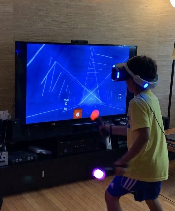
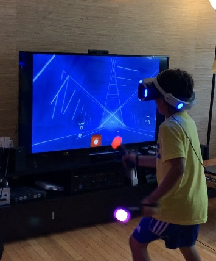

Current Research at Carnegie Mellon University
August 2016-present
Advisors: Dr. Anna Fisher & Dr. Erik Thiessen
Developed an exercise-based interactive game to enhance cognition in 4- to 5-year-olds.

Using fNIRS to examine the short- and long-term associations between exercise-induced training, functional brain connectivity, cognitive control, and later verbal abilities in 4- to 5-year-olds

Modifying commercially available physically active video games in virtual reality to improve attention regulation in students
 

Examining the impact of varying visual presentations in educational books on first and second graders’ developing reading, learning skills and understandings. Utilizing eye-tracking technology and SMI BeGaze Eyetracking Analysis Software to collect, extract, and analyze gaze shifts, blinks, saccades, fixations, and pupil dilation to investigate attention allocation of beginning readers

Investigated how
to instill the practices of high quality
adult-child interactions in interactive
digital technologies to improve learning outcomes.
Link